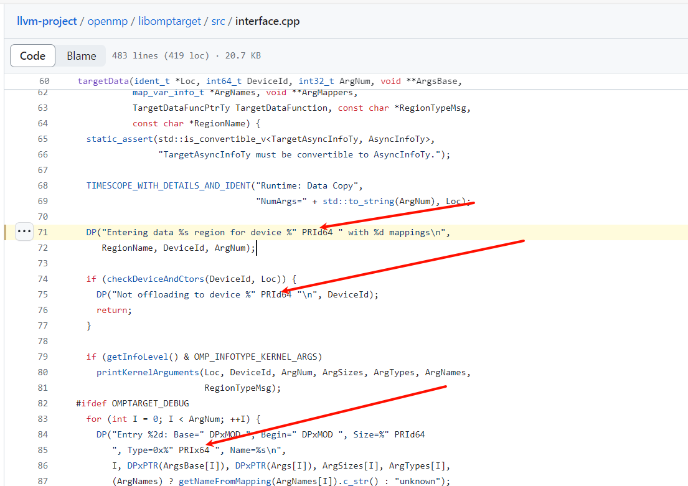

最吊C语言教程，没有之一，看完保证思维上升到一个新层次：https://www.bilibili.com/video/av238869905/
保证编译标准在C99以上，C89已经算过时了，像下面说的stdint, stdbool都是C99提出的标准。现在开发多用C99标准。
GNU C Reference: https://www.gnu.org/software/gnu-c-manual/gnu-c-manual.html
ISO C99: https://www.open-std.org/jtc1/sc22/wg14/www/docs/n1256.pdf
变量
整数
定义整数一律使用stdint.h中定义的类型。即uint8_t, uint16_t, uint32_t。不要使用短命名u8、u16、u32（正点原子已经抛弃这种命名）。不要使用int, long, long long这种命名，这种命名无法准确得知编译器分配的变量大小，容易造成溢出，而且16位、32位、64位的int, long长度不完全一样。下面是变量范围的参考：
命名 | 含义 | 范围
---------|--------------------|-----------------------------------------------------------------------------
uint8_t | 无符号一字节(8位) | 0 ~ 255 (0 ~ 2^8-1)
uint16_t | 无符号两字节(16位) | 0 ~ 65,535 (0 ~ 2^16-1)
uint32_t | 无符号四字节(32位) | 0 ~ 4,294,967,295 (0 ~ 2^32-1)
uint64_t | 无符号八字节(64位) | 0 ~ 18,446,744,073,709,551,616 (0 ~ 2^64-1)
int8_t | 有符号一字节(8位) | -128 ~ +127 (-2^7 ~ 2^7-1)
int16_t | 有符号两字节(16位) | -32,768 ~ -32,767 (-2^15 ~ 2^15-1)
int32_t | 有符号四字节(32位) | -2,147,483,648 ~ 2,147,483,647 (-2^31 ~ 2^31-1)
int64_t | 有符号八字节(64位) | -9,223,372,036,854,775,808 ~ 9,223,372,036,854,775,807 (-2^63 ~ 2^63-1)
我们在一个新文件写代码时只需要
#include "sys.h"即可，这里面就包含了stdint的类型（除了int64_t, uint64_t）。不需要再#include "stdint.h"
stdint.h中的上述几种类型叫做固定宽度类型，除此之外还有LEAST, FAST类型的变量。LEAST指的是编译器至少分配的内存的大小。比如定义一个int_least16_t的变量，指的是至少要分配2字节的空间给这个变量，编译器会根据情况更改这个变量的空间，但不会小于2字节。FAST是指快的运行速度。编译器会根据处理器平台对变量针对性的做速度优化。比如定义一个int_fast8_t的变量，如果32位整数运算更快，那么编译器会把这个变量直接分配4字节的空间。其他位数的类似，具体可以看看stdint.h中的定义。
对于一个使用stdint中的类型定义的整数，使用格式控制符（也就是printf, sprintf, scanf中的%d, %ld）输出整数时，企业一般使用inttypes.h中的格式控制符，不使用%d控制符。下面是LLVM项目的代码，可以看到输出使用的是inttypes.h的类型，而不是%d, %lld。

对于一个int32_t的数字，如果使用普通方法输出就写成printf("num = %d\n", num);；如果是其他类型，比如int8_t, uint16_t, uint8_t，仅单纯从%d, %hu, %hhu（估计你们都没见过%h）这种几个字母的控制符来判断整数类型就显得很麻烦。因此上面的输出可以写成printf("num = %" PRId32 "\n", num);也就是把%后面的d换成PRIxxx（注意引号，后面的PRId32不能再引号里面，否则就成了字符串，前面字符串的%不能丢）。对于scanf，对应的就是SCNxxx。其实PRIxxx和SCNxxx在代码里是完全等价的，只不过为了区分写成这样。
PRI/SCN后第一个字母，u对应无符号，d对应有符号，x对应十六进制（有符号负数就输出补码）；接下来如果是fast, least类型的变量，后面跟FAST, LEAST，如果不是就没有；最后跟上变量的宽度。可能没看懂，举几个例子应该就懂了。
int8_t对应PRId8，uint16_t对应PRIu16，uint8_t十六进制输出对应PRIx8，int_least32_t对应PRIdLEAST32，uint_fast16_t对应PRIuFAST16。PRI与SCN在编译器看来完全等价。具体可以打开inttypes.h看。
类似
printf的输出格式一般只在调试，或者作为CLI输出信息时使用，不会在通信中使用。数据通信一般都是从二进制位去定义。
整数没有你想象的那么简单，因为它太常用了，在一个企业项目中用什么宽度的数，是否固定位数，都是有讲究的，不是随便瞎定义的。这些规范、头文件定义了一堆看似没用的东西，其实很有用，他们都是从实际项目开发中得到的经验和教训，而不是自己主观臆断定义的。
就比如上面的格式控制符，你可能会想，PRI和SCN不都是一样的吗，统一成PRI或者其他单词不行吗，答案是不行。当你去阅读上千个文件的项目代码时，如果都写PRI，你可能就把原来输入的功能被当成输出了，然后后面的人都当输出来写，这在企业项目里是相当严重的问题，可能会造成严重的损失，你可能就被开了。
浮点数
有些代码会把单精度浮点数float定义成fp32，双精度浮点数double定义成fp64。在深度学习中会使用半精度浮点数fp16进行运算。C语言中没有半精度浮点数，因此这里就没有必要使用这种定义了。下面是不同精度的浮点数范围参考：
命名 | 含义 | 范围
-------|-------------------|------------------------------------------------------------------
float | 单精度浮点数(32位) | 1bit(符号位) 23bits(尾数位) 8bits(指数位) -3.40E+38 ~ +3.40E+38
double | 双精度浮点数(64位) | 1bit(符号位) 52bits(尾数位) 11bits(指数位) -1.79E+308 ~ +1.79E+308
浮点数遵循IEEE754标准，float的范围是-2^127 ~ 2^127，double的范围是-2^1024 ~ 2^1024。这个范围具体怎么计算的，和浮点数的存储有关。有些复杂这里就不讲了，可以自己看一些文章。

在做浮点进制转换时不可避免会出现精度丢失，这是由于在十进制中的小数，在二进制中可能是个无限循环的数。因此在输出某些小数时末尾会出现000000001或者999999999。float的精度只有6位，double的精度有15位。根据情况选择浮点数的类型，如果精度更重要，选择double类型；如果速度和存储空间更重要，选择float。
对于Cortex-M4内核，可以使用硬件FPU（Floating-Point Unit，浮点运算单元）来提升浮点数运算速度，在Keil中选择下面的选项即可使用FPU。

注意：Cortex-M3没有FPU，也就说明整个STM32F1家族都没有FPU。STM32F4家族是Cortex-M4内核，有FPU。有关FPU的内容参阅工具链-编译参数。
逻辑值bool
逻辑值使用stdbool.h中定义的bool值。尽量不要自己定义，以防重复定义。
注意，在stdbool.h中，true为1, false为0。这会影响到条件判断，参见下面条件判断。
结构体/枚举
公开的结构体定义一律放在.h文件中，除非是函数内部使用，否则不要放在.c中。
为了方便，一般都使用typedef定义名称，结尾都标一个_t或者TypeDef以表明这是一个使用typedef定义的名称。定义一个结构体变量使用typename variable，不使用struct typename variable，下面是一个例子：
/* 枚举类型定义, 一般作为参数传入或者返回值传出 */
/**
* @brief HAL State structures definition
*/
typedef enum {
HAL_CAN_STATE_RESET = 0x00U, /*!< CAN not yet initialized or disabled */
HAL_CAN_STATE_READY = 0x01U, /*!< CAN initialized and ready for use */
......
HAL_CAN_STATE_ERROR = 0x05U /*!< CAN error state */
} HAL_CAN_StateTypeDef;
/**
* @brief Return the CAN state.
* @param hcan pointer to a CAN_HandleTypeDef structure that contains
* the configuration information for the specified CAN.
* @retval HAL state
* @note 这个函数返回的就是一个枚举类型
*/
HAL_CAN_StateTypeDef HAL_CAN_GetState(CAN_HandleTypeDef *hcan) {
......
/* Return CAN state */
return state;
}
/* 结构体定义 */
/**
* @brief CAN handle Structure definition
*/
typedef struct __CAN_HandleTypeDef {
CAN_TypeDef* Instance; /*!< Register base address */
CAN_InitTypeDef Init; /*!< CAN required parameters */
......
} CAN_HandleTypeDef;
CAN_HandleTypeDef CAN1_Handler; /* 定义一个CAN_HandleTypeDef类型的变量 */
有时为了让编译器对成员变量进行内存对齐，会使用__packed和__align(num)关键字。这里就不细讲了，如果对底层了解不够深入的话就不要使用了。继续深入需要讲变量如何在内存中存储等。感兴趣可以看看相关文章。
当定义结构体成员的某些值时，我们可以使用下面写法：
typedef struct {
uint32_t Pin;
uint32_t Mode;
uint32_t Pull;
uint32_t Speed;
} GPIO_InitTypeDef;
GPIO_InitTypeDef gpio_initure = {.Pin = GPIO_PIN_9,
.Mode = GPIO_MODE_AF_PP,
.Pull = GPIO_PULLUP,
.Speed = GPIO_SPEED_FREQ_HIGH};
/* 这样与下面的方式相同 */
GPIO_InitTypeDef gpio_initure = {GPIO_PIN_9, GPIO_MODE_AF_PP, GPIO_PULLUP,
GPIO_SPEED_FREQ_HIGH};
也就是我们可以在定义变量的时候，在花括号里面用.成员名称的方式指定成员的值，这样写的好处是可读性强，可以减少代码冗余。如果不定义某些成员的值，直接不用写，没有影响。
变量修饰符
变量修饰符有auto, static, const, volatile, register, extern等。下面只讲extern, static, const，其他的请复习你的C语言。
extern用来声明一个外部变量，他只是一个占位的，告诉编译器这个变量在别的地方定义了，自己去找。如果一个变量要公开，在同名的.h加一个extern声明即可。如果一个文件要引用另一个文件的变量，在哪里用就在哪里声明。
static可以延长局部变量的生存周期，也就是一个函数出栈以后变量的值会保留。其实编译器分配带static的局部变量的时候，和全局变量分配的位置是一样的，一个函数可以通过指针获取到其他函数静态局部变量的值（请参见编译原理）。
如果static加在全局变量或者函数前，说明这个变量或函数只能被这个文件所使用。其他文件无法通过extern访问这个变量，也无法调用函数。
const代表这个变量的值无法被修改。
函数
函数修饰符
函数前修饰符有__weak, static, inline等修饰符。
__weak修饰符说明这个函数是弱函数，可以在其他地方重新定义这个函数。如果没有重定义，将会使用这个带__weak的函数。__weak修饰符在定义时有用，声明无用。
一般HAL中的MspInit, MspDeInit, Callback都是弱定义函数，我们直接可以重定义。
比如下面是stm32f4x_hal_can.h中的接收邮箱FIFO0挂起中断回调函数，我们一般会重定义这个函数：
/**
* @brief Rx FIFO 0 message pending callback.
* @param hcan pointer to a CAN_HandleTypeDef structure that contains
* the configuration information for the specified CAN.
* @retval None
*/
__weak void HAL_CAN_RxFifo0MsgPendingCallback(CAN_HandleTypeDef *hcan) {
/* Prevent unused argument(s) compilation warning */
UNUSED(hcan);
/* NOTE : This function Should not be modified, when the callback is needed,
the HAL_CAN_RxFifo0MsgPendingCallback could be implemented in the
user file
*/
}
/* 在can.c中重定义 */
/**
* @brief CAN接收邮箱FIFO0挂起中断
*
* @param hcan CAN句柄
*/
void HAL_CAN_RxFifo0MsgPendingCallback(CAN_HandleTypeDef *hcan) {
if (hcan->Instance == CAN1) {
/* 如果是CAN1收到消息 */
......
}
}
static上面讲过了，指定这个函数只能被本文件所使用，不能被其他文件使用。
inline是C99引入的关键字，C89没有，编译会报错。
inline修饰符是指这个函数是内联函数。inline只在定义函数的时候有用，声明无用。如果一个函数经常需要调用，频繁的出入栈操作会使程序运行的效率大打折扣，因此可以将这个函数作为内联函数直接嵌入到调用的地方，当成函数的一部分代码片段，不必进行一次出入栈操作。一般inline修饰符与static搭配使用，构成static inline修饰符，一个频繁调用的函数在一个文件中效率比较高。
不过inline只是给编译器的一个建议，当一个函数中的语句较少，没有循环的时候编译器才会内联。否则它跟普通函数一样，走一遍入栈、执行、出栈的流程。
在gcc编译器中，O0优化会忽略inline，O1才会内联。有关优化级别，参见编译参数。
注意：C语言与C++的inline是不同的，具体参见https://www.zhihu.com/question/270847649。
不要滥用内联函数，一般函数在10行以下且调用频繁才要考虑内联，否则效果可能不如不内联。
函数指针
函数指针在C语言是一带而过的，但是在底层开发中会经常用到。
函数指针就是指向函数的指针。下面是一个例子：
#include "stdio.h"
int sum(int num1, int num2) {
return num1 + num2;
}
int sub(int num1, int num2) {
return num1 - num2;
}
int main(int argc, char const* argv[]) {
int a = 10, b = 5;
int (*func)(int, int); /* 声明函数指针func, 函数原型为int (int, int) */
func = sum; /* func指向sum函数 */
printf("a + b = %d\n", func(a, b));
func = sub; /* func指向sub函数 */
printf("a - b = %d\n", func(a, b));
return 0;
}
执行结果：
a + b = 15
a - b = 5
可以思考一下为什么。首先func = sum，那么相当于func就是sum函数，调用func就是调用sum。其次func = sub，调用func就是调用sub。
需要注意的是给func赋值的是函数名，不能带括号，否则就是一个函数的调用。如果一个函数返回的是函数指针，那可以带括号。函数指针同样可以作为参数和返回值。
声明函数指针的参数列表(int, int)可以写成(int a, int b)，也不一定非得是a,b，参数名任意，所以一般不写参数名。
函数指针一般用在回调函数，首先初始化的时候将函数作为参数传入，当回调的时候会调用这个函数。
ST HAL库的中断回调函数可以用函数指针实现，参照HAL Driver。
函数的可重入和不可重入
这里只是简单提一下，更深入的内容请参见操作系统。
可重入，字面意思就是可以重新进入。当中断请求传入CPU时，CPU会先停止当前正在执行的函数，去执行中断请求。执行完中断以后才会继续执行被打断的函数。继续执行这个过程就是对应重入这个词。
可重入函数是指可以被中断打断的函数。不可重入函数当然就是不能被中断打断的函数。
当一个中断传入CPU时，CPU会先对正在执行的函数保存现场（假设这个正在执行的函数叫函数A），然后再去执行中断函数B。如果函数A正在使用一个全局变量C，而中断函数B也需要使用全局变量C。那么这个变量C的值就有可能被函数B更改。当函数B执行完成以后，问题来了，变量C的值到底有没有被改变？如果被改变了，函数A继续执行是否是符合预期的？这里的函数A就是不可重入函数。
而函数D如果是使用的局部资源，没有使用公共资源，即使中断打断了函数D的执行，函数D继续执行结果也会是符合预期的。那么这个函数D就是可重入函数。
举个例子，你在宿舍和其他舍友正在抄一个材料，这个材料很长，页数很多，而且没有页码，也没有钉起来。你在抄的时候突然有人找你有事，你出去了很长时间。回来的时候你发现舍友已经抄了很多了，往后翻了好几页了。而你不知道你抄到哪里了，这个材料又长又没页码。继续抄显然会漏掉很多东西。这说明这样抄材料不可重入。
而如果你把材料复印了一份，只有你一个人照着这个复印件抄。别人来找你的时候，可以把位置记录一下，然后再出去。这样回来再接着抄的时候可以保证抄的内容是正确的。这样抄材料是可重入的。
STM32中有很多中断请求，当使用一个公共资源，尤其是使用RTOS时要考虑函数是否可重入。
条件判断
这里不仅限于if，while, for等带有条件判断的同理。
我们都知道，如果一段代码是这样写的：
int a = 2;
a = ....;
if (a = 1) {
...
}
这个if的条件永远为真。大家也都知道，应该写成a == 1。为了避免这种错误，有些开发规范会要求把常量写左边，也就是if (1 == a)。这样当写成if (1 = a)时，由于1是不可修改的常数，编译会报错。
也可以使用clang-tidy这种静态代码分析工具，当写出这种代码时，工具会提示说这里的逻辑可能不对，需要修改。
C语言中认为，0为假，非0为真。但是在stdbool.h中，true的值为1。这是由于在C99标准中bool值占一个二进制位。所以我们写if条件为真时，不应该加condition == true，下面是一个例子：
if (condition == true) {
...;
}
if (condition) {
...;
}
这两个if，看似一样，实则不然。假如condition的值为2，第一个if是不会进入的，true的值固定是1。而第二个if是可以进入的。
if条件为假一般对条件取反，当然写成condition == false也是可以的：
if (condition == false) {
...;
}
if (!condition) {
...;
}
/* 这两个if是等价的, 只不过为了方便我们写成第4行那样 */
PS: Python中
True也是1。当你写if条件为True时，你猜PyCharm画一条黄波浪线提示你什么。
不要对浮点数做相等或者不等判断，浮点数由于精度问题并不会按照我们预期的方式执行。下面我用Python来演示一下（C语言也一样）

看到了吗，0.1 + 0.2 == 0.3的值为False，这是由于在进制转换的过程中0.1 + 0.2 == 0.30000000000000004，不是0.3，结果自然不相等。
隐式类型转换
要格外注意隐式类型转换，自己想一下下面代码的运行结果是什么，自己也可以运行一下：
#include "stdint.h"
#include "stdio.h"
#include "inttypes.h"
int main(int argc, char const *argv[]) {
/* 无符号到有符号 */
uint16_t u16num_1 = 45024;
int16_t s16num_1 = u16num_1;
printf("u16num = %" PRIu16 ", s16num = %" PRId16 "\n", u16num_1, s16num_1);
/* 大范围到小范围 */
int32_t s32num_2 = 40328;
int16_t s16num_2 = s32num_2;
printf("s32num = %" PRId32 ", s16num = %" PRId16 "\n", s32num_2, s16num_2);
/* 小范围到无符号大范围 */
int16_t s16num_3 = -1;
uint32_t u32num_3 = s16num_3;
printf("s16num = %" PRId16 ", s32num = %" PRIu32 "\n", s16num_3, u32num_3);
return 0;
}
运行结果：
u16num = 45024, s16num = -20512
s32num = 40328, s16num = -25208
s16num = -1, s32num = 4294967295
思考一下为什么结果是这样，隐式类型转换要格外注意上面的几种情况。
有关隐式转换类型，请查阅：https://learn.microsoft.com/en-us/cpp/c-language/assignment-conversions?view=msvc-170，出现问题查这个文档就够了，可以算最权威的。
定义与声明
如果下面的内容可以理解，那说明你的C语言基础基本过关。
int n; /* 声明int类型n */
int* p; /* 声明int*类型指针p */
int& r; /* 声明int引用r(C++语法，知道即可) */
int a[10]; /* 声明int[10]类型数组a */
int f(); /* 声明返回int的函数f */
int f() {} /* 定义返回int的函数f */
int* func(); /* 声明返回int*指针的函数func */
int* func() {} /* 定义返回int*指针的函数func */
int (*fp)(); /* 声明函数指针fp，指向一个原型为int f()的函数 */
有关声明的更多内容，参见解读解读复杂的类型声明。
宏定义
define表达式时一律用括号括起来
#define A B + 1 /* 禁止这种宏定义 */
#define A (B + 1) /* 建议使用这种宏定义 */
宏定义做运算时操作数本身也要加括号，下面是一个例子：
#define SQUARE(X) (X * X) /* 应该都能看懂, 求一个数的平方 */
int a = SQUARE(5);
int b = SQUARE(2 + 3);
/**
* 想一想, a, b的值是多少?
* 都是25?
* 错, b = (2 + 3 * 2 + 3) = 11
* 所以宏定义时要对操作数本身也要加括号
*/
#define SQUARE(X) ((X) * (X))
定义一个常数时经常后面加上后缀F,U,L（大小写均可，一般宏定义用大写，代码用小写），这个后缀叫做字面量，让编译器明白这个数应该是什么类型，避免编译器乱分配类型导致运算错误或者溢出。整数不加后缀默认为int类型，有小数点默认为float类型。一般运算值出错是由于不同类型的数值运算，比如整数和浮点运算。下面是实例：
#define DIAMETER 5.0F /* 浮点数, 相当于float */
#define DIAMETER 5.0L /* 浮点数, 相当于double */
uint32_t value = 2;
float scale = value / DIAMETER;
/* 如果#define DIAMETER 5, scale为0 */
#define ERROR 0U /* 无符号数, 相当于uint32 */
#define MAX 3000000000L /* 长整数, 相当于int64 */
#define DAT0 B1AFF /* F结尾, 十六进制整数B1AF = 45,487 */
#define DAT1 101B /* B结尾, 二进制整数 */
在实际写代码时比较容易出现这种错误，因此养成好习惯，除普通整数外常数都加上后缀。
有关预处理，参见项目开发/预处理命令。
位带操作说明（重要！必读！）
正点原子已经取消旧版代码中的位带操作，继续使用以前的方法编译会报错。就算把旧版sys.c放进来，在AC6编译器大概率编译不通过。现使用以下方式：
/* 旧版位带操作控制IO的方式 */
#define LED0 PAout(0)
LED0 = 0; /* 将PA0拉低 */
/* 新版定义控制IO口方式 */
#define LED0(x) \
x ? HAL_GPIO_WritePin(LED0_PORT, LED0_PIN, GPIO_PIN_SET) \
: HAL_GPIO_WritePin(LED0_PORT, LED0_PIN, GPIO_PIN_RESET) /* LED0 */
LED0(0); /* 将PA0拉低, 与LED0 = 0等价 */
// LED0 = 0; /* 不要使用这种方式, 编译会提示LED0是不可修改的常量 */
LED0(1); /* 这句与LED0 = 1等价 */
/* 旧版读取IO输入 */
#define PA1 PAin(1)
/* 现改成这种方式 */
#define PA1 HAL_GPIO_ReadPin(GPIOA, GPIO_PIN_1)
/* 宏定义中不可以以分号结尾, 如果有多段代码需要执行, 且以分号结尾, 可以用下面的方式 */
/* PS: 正点原子新代码IO都是这种宏定义 */
#define DO1 do { HAL_GPIO_ReadPin(GPIOC, GPIO_PIN_2); } while (0)
/**
* 不要看到有while就以为会执行多次, 其实他只会执行一次
* 如果你的C语言够扎实的话, 这段代码替换以后while(0)后面自动会带一个分号
* 看不懂, 没关系, 下面是一个例子
*/
do_pin_sta = DO1;
/* 这段代码宏定义以后和下面这行是一样的 */
do_pin_sta = do {
HAL_GPIO_ReadPin(GPIOC, GPIO_PIN_2);
} while(0);
/* 所以21行宏定义末尾不带分号是可以的, 编译也可以通过 */